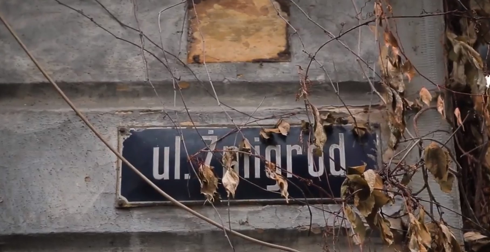
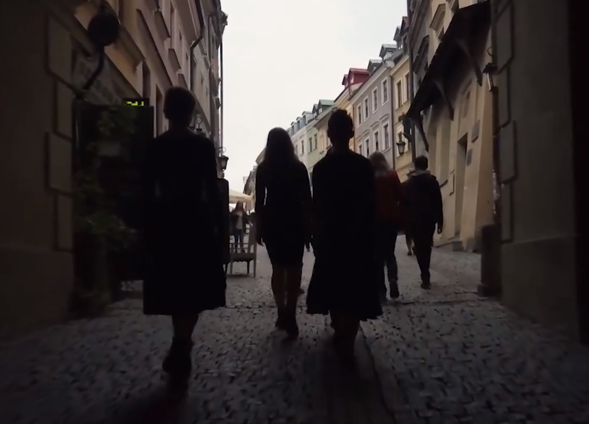
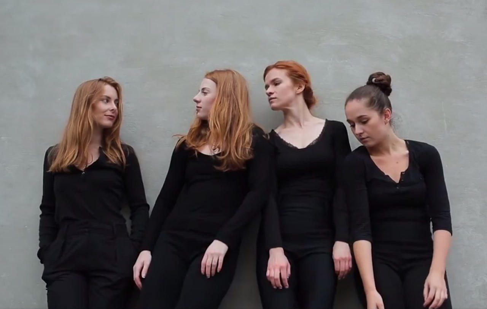
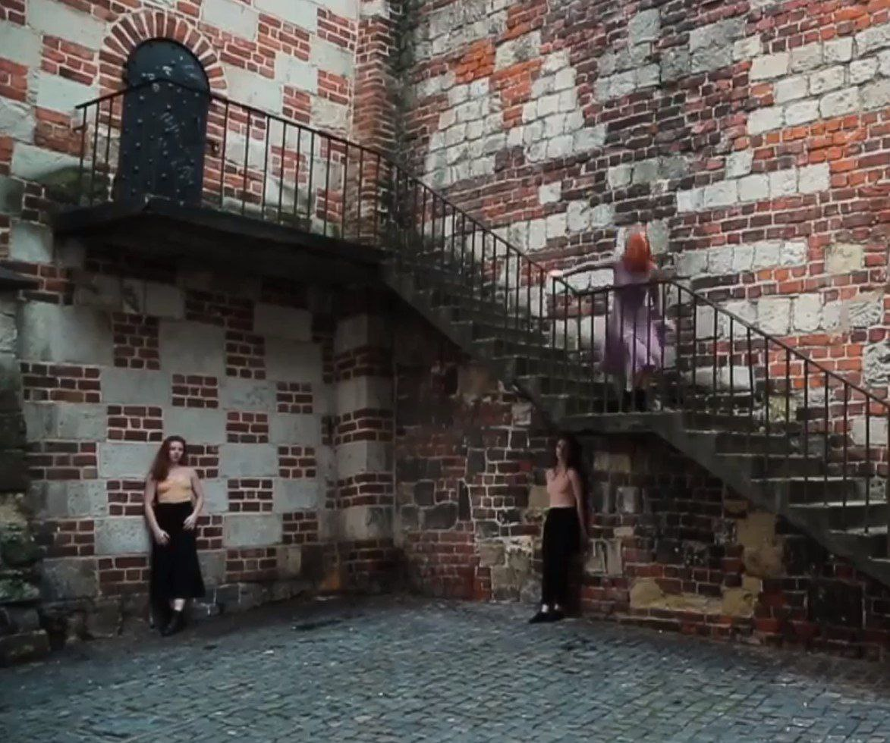
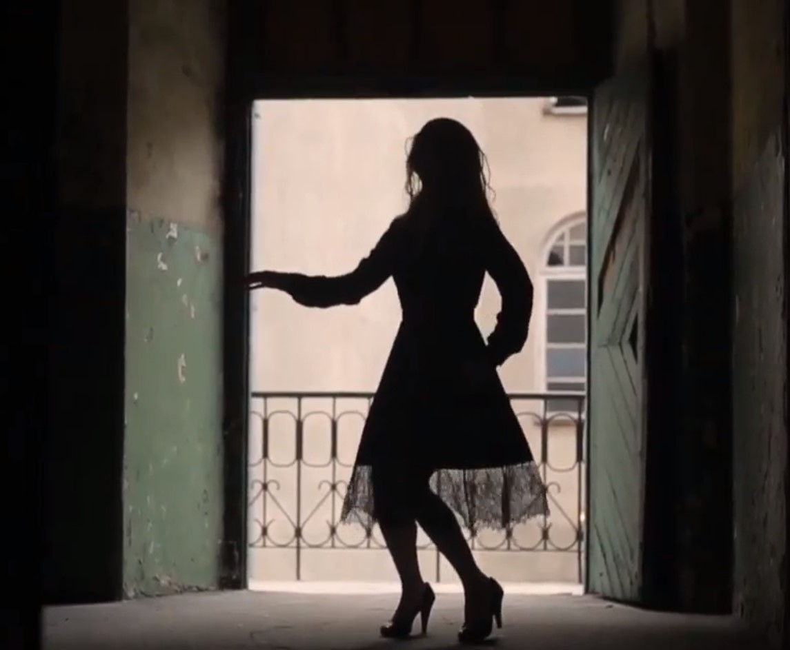
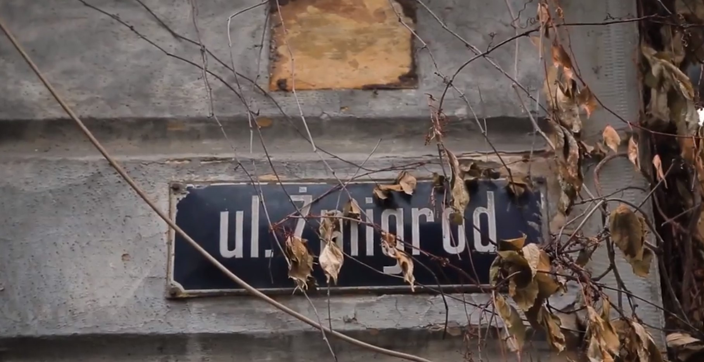
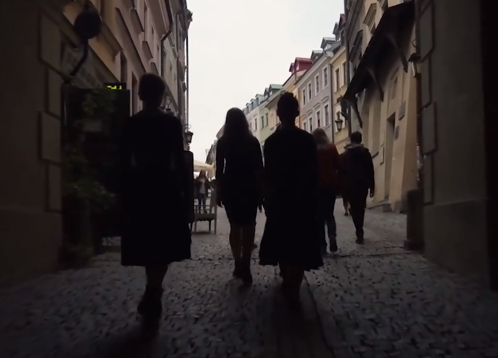
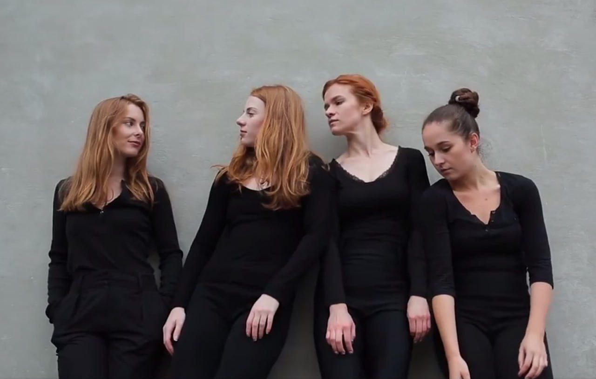
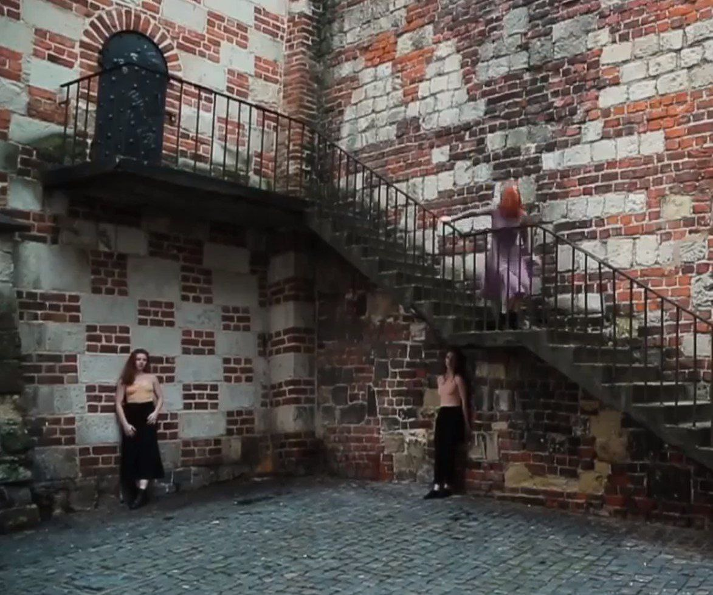
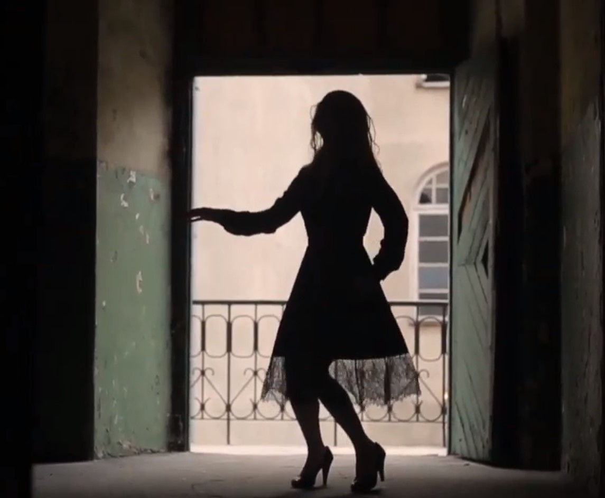

Personal Spring (Ukraina-Polska, 2017)

Pomysł, reżyseria: Olha Kebas
Wykonawcy: Olena Mits, Anastasia Baydina (UA), Daniela Komendera, Joanna Dudek(PL)
Muzyka: Freenology (PL)
Wideo: Witalij Nużnenko (UA)
Wykonawcy: Olena Mits, Anastasia Baydina (UA), Daniela Komendera, Joanna Dudek(PL)
Muzyka: Freenology (PL)
Wideo: Witalij Nużnenko (UA)
Jakie tajemnice skrywają ulice? Jako świadkowie wielkich i małych tragedii i zwycięstw chłoną historie swoich mieszkańców i zdradzają tajemnice tylko najbardziej ciekawskim...
Takie historie stały się podstawą do stworzenia tego spektaklu. Opowiedziała nam je ulica Żmigród, znajdująca się bardzo blisko centrum Lublina. Położona pomiędzy Starym Miastem a nowoczesnym centrum biznesowym, łączy przeszłość z przyszłością, czyniąc ją naprawdę wyjątkową.
Spektakl odbył się w ramach XXI Międzynarodowych Spotkań Teatrów Tańca w Lublinie (2017) oraz międzynarodowego festiwalu GogolFest w Kijowie (2019).
Spektakl odbył się w ramach XXI Międzynarodowych Spotkań Teatrów Tańca w Lublinie (2017) oraz międzynarodowego festiwalu GogolFest w Kijowie (2019).
https://mstt.pl/wydarzenie/olga-kebas-personal-spring/
https://www.facebook.com/watch/?v=1706071103033183
https://www.facebook.com/watch/?v=1706071103033183
 








